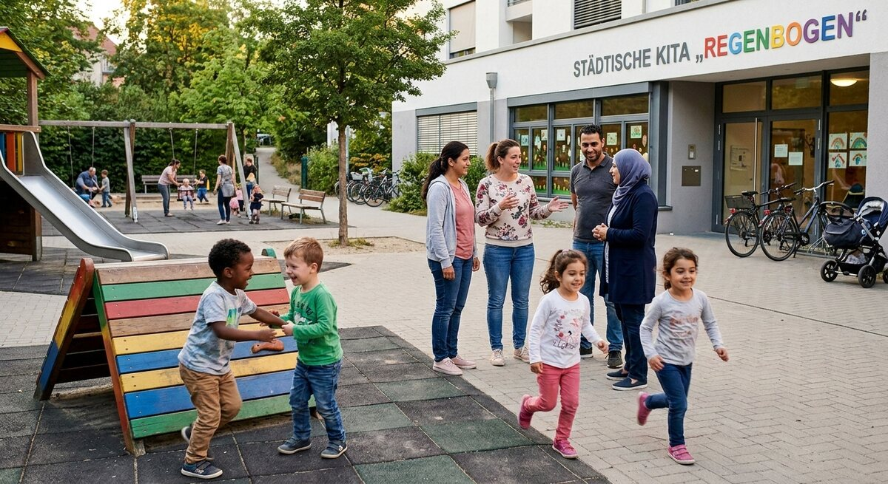

Teil 2 · Bild und Erfahrung
Karte 026
Eltern vor der Kita oder auf dem Spielplatz
Ausführliches Übungsmaterial zur Vorder- und Rückseite der Karte.

Ihre Aufgabe
- die Personen auf dem Bild
- was die Kinder gerade machen
- was für Eltern in solchen Situationen wichtig ist
- welche Erfahrungen Sie selbst haben
- warum solche Orte auch für Kontakte nützlich sind
Interaktives Sprechtraining
Mit ChatGPT sprechen üben
Öffne ChatGPT, starte dort zuerst den Sprachmodus (Voice Mode) und füge anschließend den kopierten Übungsprompt in diesen Chat ein.
- Tippe auf den Button. Der Übungsprompt wird kopiert und ChatGPT wird geöffnet. Melde dich bei Bedarf in deinem ChatGPT-Konto an.
- Starte in ChatGPT zuerst den Sprachmodus (Voice Mode).
- Füge den bereits kopierten Prompt in den Chat des Sprachmodus (Voice Mode) ein und sende ihn ab.
- Beginne anschließend die Sprechübung.
- Wenn du die Übung beenden und Feedback bekommen möchtest, sage:
Die Übung ist beendet. Bitte gib mir jetzt Feedback.
Prompt anzeigen oder manuell kopieren
ChatGPT ist ein externer Dienst. Für den Sprachmodus (Voice Mode) musst du dich möglicherweise bei deinem ChatGPT-Konto anmelden und den Zugriff auf das Mikrofon erlauben. Verfügbare Funktionen hängen von deinem Gerät und Konto ab. Die Übung ersetzt keine offizielle Prüfungsbewertung.
Nützliche Satzanfänge
- Auf dem Bild sind …
- Die Kinder spielen gerade …
- Für Eltern ist wichtig, dass …
- Ich kenne solche Situationen, weil …
- Dort kann man auch …
Modellantwort anhören
Höre zuerst aufmerksam zu. Sprich danach nicht einfach alles nach, sondern bearbeite die Aufgabe mit eigenen Informationen.
Modellantwort
Auf dem Bild sind wahrscheinlich Eltern und Kinder vor einer Kita oder auf einem Spielplatz. Die Kinder spielen, laufen oder sprechen miteinander. Die Erwachsenen stehen vielleicht daneben, beobachten die Kinder und reden kurz zusammen. Die Situation wirkt freundlich und lebendig. Ich glaube, dass solche Orte für Familien sehr wichtig sind, weil Kinder dort lernen und gleichzeitig soziale Kontakte haben.
Für Eltern ist in solchen Situationen wichtig, dass die Kinder sicher sind und sich wohlfühlen. Gleichzeitig können Eltern dort oft andere Familien kennenlernen. Ich kenne solche Situationen gut, weil ich mein Kind selbst zur Kita bringe oder mit ihm auf den Spielplatz gehe. Dort entstehen manchmal kurze, aber hilfreiche Gespräche. Man tauscht Informationen aus oder lernt neue Wörter. Deshalb finde ich, dass Kita und Spielplatz nicht nur für Kinder wichtig sind, sondern auch für Eltern, die in einem neuen Land Anschluss suchen.
Mögliche Prüferfragen und Antwortideen
-
Gehen Sie oft mit Kindern auf den Spielplatz?
Antwortidee: Ja, wenn das Wetter gut ist, gehen wir oft dorthin.
-
Warum ist die Kita für Familien wichtig?
Antwortidee: Weil Kinder dort lernen, spielen und einen geregelten Alltag haben.
-
Lernen Eltern dort auch andere Leute kennen?
Antwortidee: Ja, dort entstehen oft erste Kontakte mit anderen Eltern.
-
Was brauchen Kinder im Alltag besonders?
Antwortidee: Sie brauchen Sicherheit, Aufmerksamkeit und feste Strukturen.
Wortschatz
| Deutsch | Englisch |
|---|---|
| die Kita | daycare center |
| der Spielplatz | playground |
| beobachten | to observe |
| lebendig | lively |
| sich wohlfühlen | to feel comfortable |
| der Anschluss | social connection |
| die Struktur | structure |
| die Familie | family |
Schnelltraining
Nennen Sie drei Dinge, die Eltern an Kita oder Spielplatz wichtig finden. Fügen Sie dann einen Satz mit „Dort kann man auch …“ hinzu.